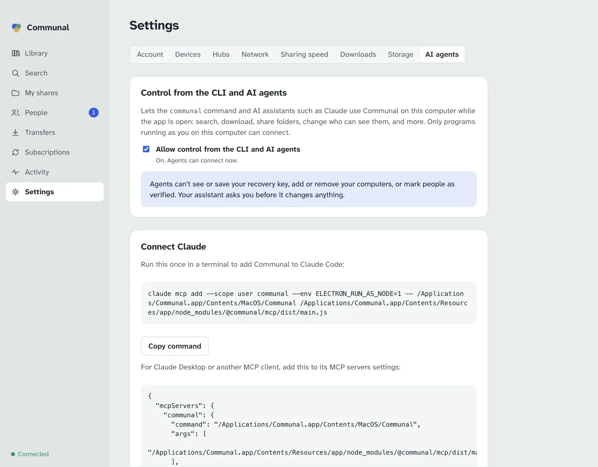

AI agents
Claude, or any assistant that speaks the Model Context Protocol (MCP), can use Communal for you. Ask in your own words: it searches, downloads, shares, sorts out who can see what, drives your other computers and helps run your hub, and asks you before anything that matters.
Connect an assistant
With the desktop app
- Open Settings › AI agents and turn on Allow control from the CLI and AI agents. It takes effect straight away; there’s no need to restart.
- Copy the command shown there and run it once in a terminal to add Communal to Claude Code. For Claude Desktop or another MCP client, copy the settings block into its MCP servers configuration instead.

The app runs the assistant’s connection itself, so there’s nothing else to install. The assistant talks to the app that’s already open, and when it wants to show you something, the window comes forward and goes there.
On a server or with the command line
The headless client has the same thing built in:
claude mcp add communal -- communal mcp
communal mcp finds the running communal daemon, or the open app
if there’s no daemon, and keeps working when either restarts. Set
COMMUNAL_DATA if the daemon uses a different data folder. For other clients
the command is communal with the argument mcp.
Finding and downloading
The assistant searches every hub you’re on, browses people’s folders, and can look before it downloads: it sees thumbnails of photos, videos and PDFs, and can read part of a text file straight from its owner’s computer.
- “Find the lake trip photos Maya shared and download them to my Pictures folder.”
- “Look through Alex’s Photos/2024 folder and download just the ones with the dog in them.”
- “What columns does the budget spreadsheet in Jo’s Shared folder have?”
- “Show me the last 50 lines of the server log on my NAS.”
- “Is anyone sharing a live recording of Blue Lines? Only from people I’ve verified.”
- “Download Sam’s whole Recipes folder, then tell me when it’s finished.”
- “Clear the finished downloads.”
If you ask it to save into a folder that you share yourself, it checks first who would see the files there and tells you, since a download inside a shared folder is shared like the rest of it.
Sharing and who can see what
New shares are visible only to you. Who can see a folder is set on each hub separately, and the assistant always says which hub it means.
- “Share my Photos folder only with my Family group on the family hub.”
- “Make Music visible to everyone on the family hub, but keep Music/Demos to myself.”
- “Who can see Photos/2024/beach.jpg on the work hub, and why?”
- “List my shares on the book club hub too.”
- “Stop sharing Old Projects.”
- “Who downloaded files from me this week?”
Before it changes who can see something, the assistant works out exactly what would change and tells you. It goes ahead only once you say yes:
YouShare my Photos folder only with my Family group on the family hub.
AssistantOn the family hub, 1,284 files in Photos (Photos/2023/lake.jpg, Photos/2023/cabin.jpg, …) would go from only you to the group Family (4 people). People who can’t see these files now would be able to. Go ahead?
YouYes.
AssistantDone. Ana, Ben, Cleo and Dad can see Photos on the family hub. It stays private on your other hubs.
People and groups
- “Has anyone asked to connect with me?”
- “Find Jo on the family hub and send a connection request.”
- “Accept Sam’s request and add them to my Book Club group.”
- “Make a group called Neighbours with Priya and Tom.”
- “Take Chris out of the Family group.”
Marking someone as verified isn’t something an assistant can do: that means comparing a safety code with them yourself.
Your devices and remote control
Your assistant can ask your other computers to download things, as long as remote control is on there. Another computer saves only into its downloads folder or a destination it offers (like Movies or TV), never into a folder named from outside.
- “Download season 2 of Northern Lights to Movies on my Jellyfin server.”
- “Which of my computers are online, and which take requests?”
- “What’s the media server downloading right now? Cancel the big one.”
- “Tell me when the download on the media server is done.”
- “Add a destination called Music at /Volumes/Media/Music on this computer.”
- “Let my other devices start downloads here, but only into Movies and TV.” It asks you before turning remote control on.
Subscriptions and the synced folder
- “What’s my Jellyfin server subscribed to? Pause the anime one.”
- “Follow Maya’s Photos/2025 folder, and keep my copies if she deletes hers.”
- “Subscribe the media server to Alex’s New Episodes folder, into TV.”
- “Stop following Sam’s Podcasts folder. Keep what’s already downloaded.”
- “Turn on the synced folder on this laptop.”
- “Which of my computers is my Communal folder in step with?”
When you subscribe, the assistant asks whether to delete your copies when the owner deletes theirs. It leaves them alone unless you say otherwise.
When something doesn’t work
A download that can’t reach its source comes with a diagnosis: what went wrong, whose side can fix it, and how. The assistant reads it and checks your own network.
YouWhy can’t I download from Bob?
AssistantYour download of trip.mov is waiting: Bob’s computer is online, but no direct connection could be made. Your network looks fine (an open NAT, and your router mapped the port). Bob’s router is the strict kind. The easier fix is on his side: turning on UPnP on his router, or forwarding a port, should do it. Want me to open the details in the app?
- “Run the network check again. Did my router map the port?”
- “Is this install working properly?”
- “Limit uploads to 2 MB/s and three people at a time.”
- “Make my downloads go to /Volumes/Big/Downloads from now on.”
- “The thumbnail cache is huge. Clear it and keep it under 1 GB.”
Running a hub
On a hub you administer, the assistant can do what Settings › Hubs › Manage does. It asks you before every approval, ban and settings change.
- “Who’s waiting to join my hub?”
- “Let Priya and Tom in.”
- “Switch the hub to approval mode and call it Hilltop Friends.”
- “Ban the account that keeps sending requests. Reason: spam.”
- “What changed on the hub this week?”
- “Who shares the most on the hub, and whose computers have been offline for a month?”
It sees what the hub sees: people, their computers and how much they share, and who’s connected to whom. Never anyone’s file names, groups or access rules. Making someone an admin is done on the hub’s server, not by an assistant.
Safety limits
- Some things always need you. An assistant can’t see or save your recovery key, add, approve or remove your computers, mark a person as verified, or make anyone a hub admin. Those tools don’t exist, so no prompt can reach them.
- It asks before changes. Every tool that changes something is marked as such, so your assistant asks first. Before it opens a folder to more people it shows you exactly who would see what, and a preview is never taken as your yes.
- It sees only what you can. Searches and folders go through the same access rules as yours, and the owner’s computer checks every thumbnail and every part of a file it hands over.
- Only programs running as you. The connection is a local socket that only your user account on this computer can open. In the desktop app it exists only while the setting is on.
- Your other computers decide for themselves. They take requests only with remote control switched on there, and save only into their downloads folder or their destinations.
- What it reads goes to your AI provider. File names, thumbnails and parts of files the assistant looks at are sent to the AI service you use, like anything else you show it. Files you download never are.
- Names are written by other people. File and folder names come from whoever shared them. If your assistant suddenly suggests something you didn’t ask for, say no.
All the tools
For the curious, and for checking what a client is allowed to call.
| Area | Tools |
|---|---|
| Overview | get_status, list_hubs, self_check |
| Finding files |
search_files, list_library, browse_folder,
preview_text, read_file_part,
view_thumbnails
|
| Downloads |
download_file, download_folder,
check_destination, list_transfers,
wait_for_transfer, cancel_transfer,
clear_finished_transfers, list_destinations,
save_destination, remove_destination
|
| Sharing |
list_shares, share_folder, stop_sharing,
set_share_hubs, get_access_rules,
explain_access, preview_access, set_access,
get_activity, clear_activity
|
| People |
list_connections, find_people,
request_connection, accept_connection,
remove_connection, list_groups, save_group,
delete_group
|
| Your devices |
list_devices, list_remote_devices,
get_remote_settings, set_remote_settings, and
on_device on downloads, transfers and subscriptions
|
| Subscriptions |
list_subscriptions, subscribe_folder,
update_subscription, unsubscribe,
get_synced_folder, set_synced_folder
|
| Hubs, network and settings |
join_hub, leave_hub, get_network,
check_network, get_settings, set_upload_limits,
set_downloads_folder,
set_thumbnail_cache
|
| Managing a hub (admins only) |
list_hub_users, approve_hub_user, ban_hub_user,
unban_hub_user, get_hub_settings,
set_hub_settings, get_hub_graph,
get_hub_admin_log
|
| The app window | show_in_app |